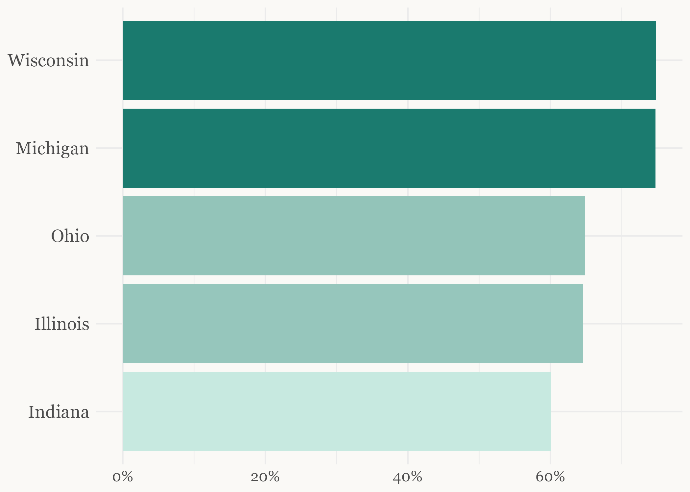
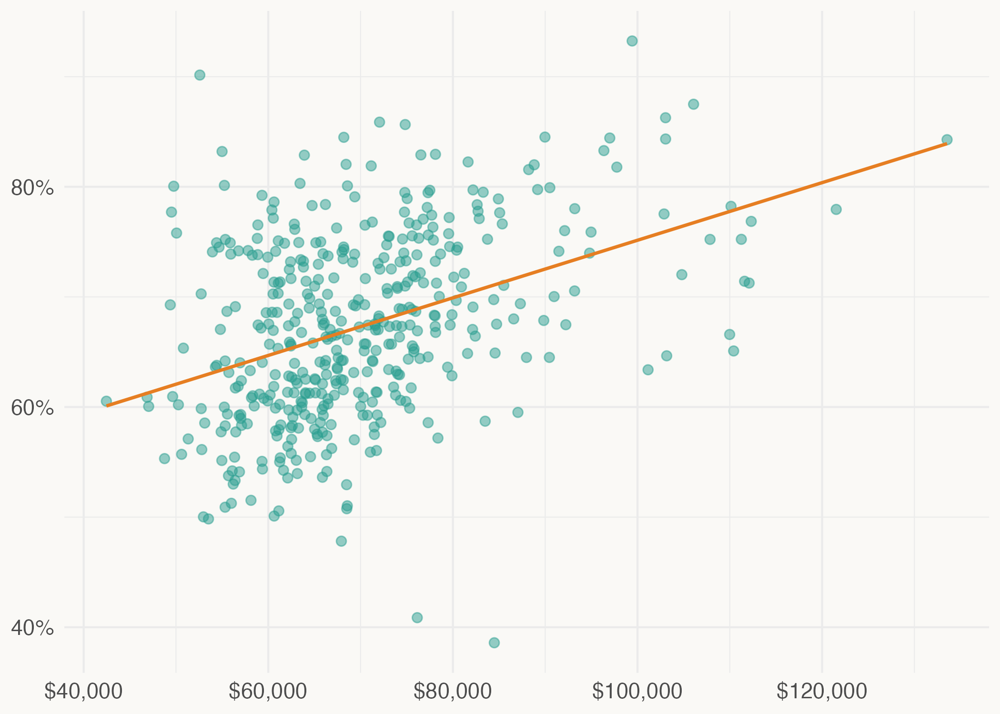

What do they have in common? Across Illinois, Michigan, Indiana, Wisconsin, and Ohio, the counties where the fewest people show up share something in common — and it isn't geography.
Even the highest-turnout state hides enormous within-state variation.

Each dot is a county. The pattern holds everywhere: wealthier counties vote more.

Even at the state level, there were large levels of variation between Midwestern states in terms of voter turnout during the 2024 Presidential Election. States like Michigan and Wisconsin are national examples of high participation, with turnout rates of nearly 75% among the Citizen Voting Age Population (CVAP). But right next door, Indiana's turnout was just 60% — making it one of the lowest turnout states in the country.
Geographic clustering can't fully explain the massive participation difference between states like Indiana and Michigan, whose borders share over 100 miles. So what can help explain it? Looking at the data, money appears to be a good place to start. Zooming in to the county level paints a clear picture: the wealthier a county is, the more it votes.
Still, one plot rarely tells the full story. Click below to explore how income and education shape turnout in Illinois.